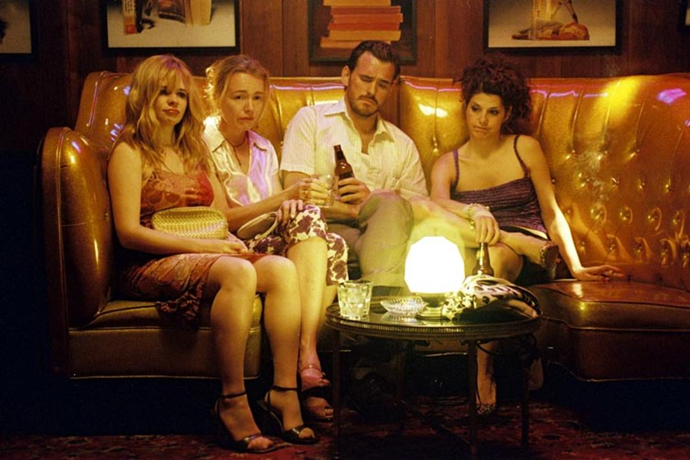
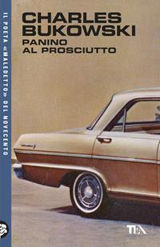
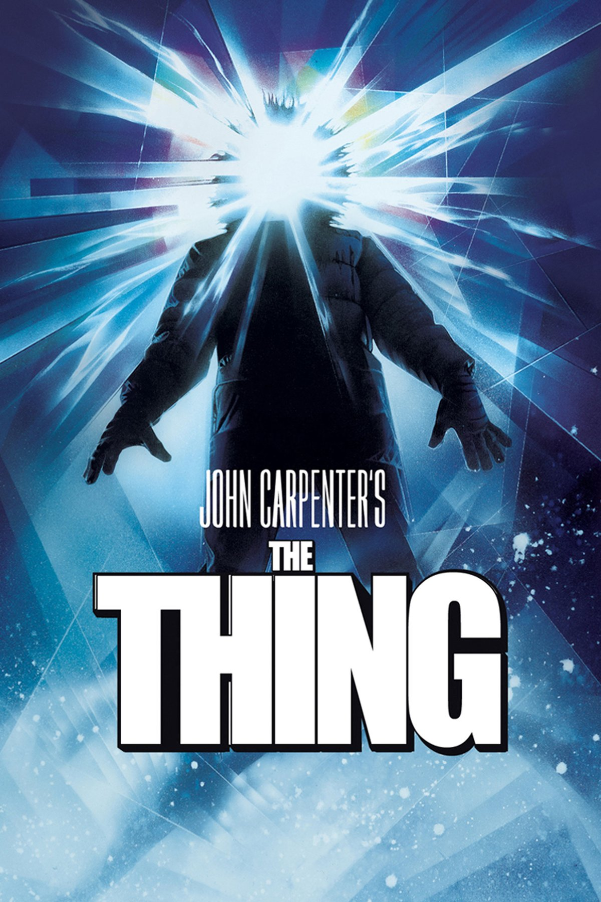
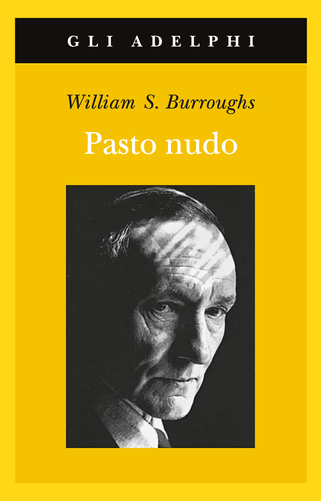
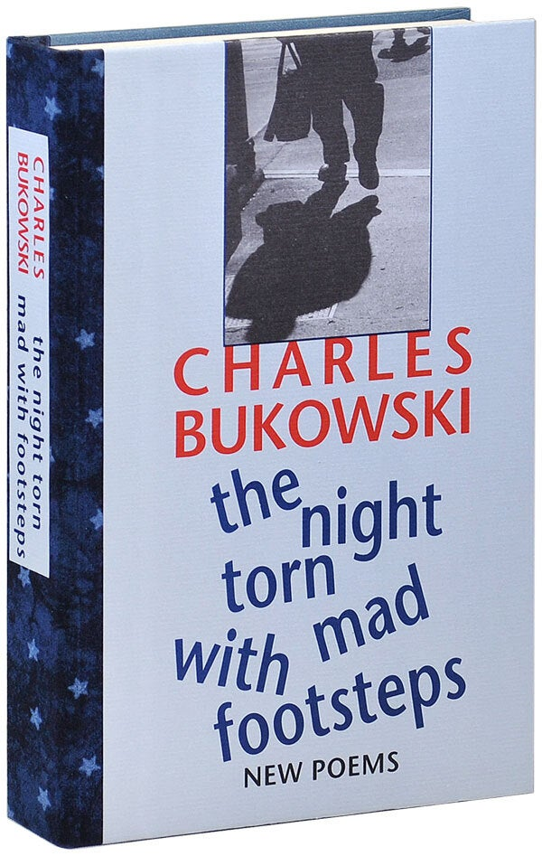
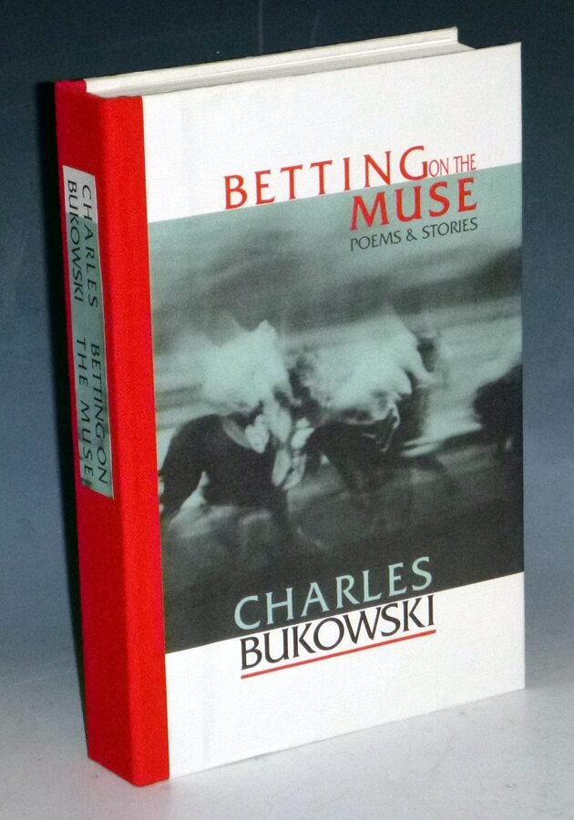
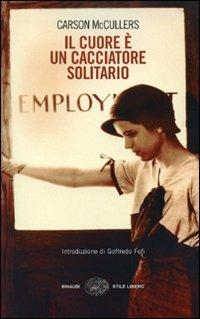

34:24 · 11 OPERE
Charles Bukowski
Il filo del discorso
Dr Divago presenta Charles Bukowski partendo dal film Factotum e da alcuni elementi della sua vita: la nascita in Germania, la giovinezza difficile, il lavoro e la scrittura. Il ritratto prende presto una direzione interpretativa: la figura dell’ubriaco, secondo il relatore, nasconderebbe un osservatore capace di riconoscere il conformismo e la distruzione dell’interiorità. La discussione sull’originalità passa per Lovecraft, Burroughs e la distanza attribuita a Bukowski dalla Beat Generation.
Leggi la sintesi completaRiduci la sintesi
Il cuore del video sono quattro letture poetiche. One for the Road immagina Socrate nel mondo moderno; Centuries of Lies torna sul celebre incidente televisivo francese e sulle interpretazioni sbagliate del successo; The Terror espone una visione cupa della collettività; Carson McCullers rivela, nella lettura di Dr Divago, una tenerezza spesso trascurata. Il confronto con Socrate collega la poesia a una domanda etica: conservare l’anima e il giudizio personale quando il contesto sociale sembra corromperli. Il relatore interpreta la ruvidità pubblica di Bukowski come una difesa dell’autenticità, ma la poesia sul successo mette in crisi anche una lettura troppo eroica dell’autore. La scheda distingue questo percorso critico dai dati biografici: il romanzo autobiografico non è una cronaca letterale, il film di Carpenter ha una fonte diversa da Lovecraft e la morte di McCullers raccontata nella poesia non coincide con quella documentata.
I libri nel discorso

Factotum
Note sul riferimento
Fotogramma del film: FOTOGRAMMA PROMOZIONALE di Factotum, film del 2005 diretto da Bent Hamer, sceneggiatura di Hamer e Jim Stark, con Matt Dillon nel ruolo di Henry Chinaski. Fotografia pubblicata da Filmweb: Dillon con tre donne seduti nel locale. Non è la copertina di un libro né una locandina.
Immagine promozionale del film del 2005. Titolo e crediti verificati nelle schede cinematografiche; assenti dalla fotografia.
Film Factotum e Matt Dillon esplicitamente nominati; non citazione autonoma del romanzo omonimo.

Panino al prosciutto / Ham on Rye
Note sul riferimento
Copertina: Panino al prosciutto, TEA, collana TEA Uno, 8 maggio 2026, traduzione di Simona Viciani, 336 pagine, ISBN 9788850275786. Copertina di un’edizione successiva al video; originale Ham on Rye del 1982.
Immagine autentica dell’opera, controllata visivamente; l’edizione di riferimento non è attribuita al filmato.
Titolo inglese Ham on Rye esplicito nel discorso sulla giovinezza.

La cosa / The Thing
Note sul riferimento
Locandina del film: LOCANDINA del film The Thing, John Carpenter 1982, sceneggiatura di Bill Lancaster, 109 minuti; uscita statunitense 25 giugno 1982. Figura incappucciata con luce al posto del volto e titolo leggibile. La fonte narrativa accreditata è Who Goes There? di John W. Campbell Jr., distinto dall’influenza di Lovecraft.
Locandina autentica fornita da Universal; non una copertina di Lovecraft.
Film La cosa di Carpenter esplicitamente richiamato nel passaggio su Lovecraft.

Pasto nudo / Naked Lunch
Note sul riferimento
Copertina: Pasto nudo, Adelphi 2006, gli Adelphi 291, traduzione di Franca Cavagnoli, 273 pagine, ISBN 9788845920936. Edizione italiana del testo restaurato; originale Naked Lunch, Olympia Press 1959. Copertina gialla con ritratto dell’autore, non attribuita come esemplare del video.
Immagine autentica dell’opera, controllata visivamente; l’edizione di riferimento non è attribuita al filmato.
Naked Lunch e Burroughs esplicitamente nominati.

The Night Torn Mad with Footsteps: New Poems
Note sul riferimento
Copertina: FOTOGRAFIA DELLA RACCOLTA The Night Torn Mad with Footsteps: New Poems, Black Sparrow Press, Santa Rosa 2001, esemplare O della tiratura deluxe di 26 copie, 352,[4] pagine secondo il catalogo antiquario. Dorso blu a stelle e coperta con fotografia di una figura e della sua ombra; titolo e autore leggibili. La fotografia non prova che il volume del relatore sia questo particolare esemplare.
Immagine autentica dell’opera, controllata visivamente; l’edizione di riferimento non è attribuita al filmato.
Titolo della raccolta pronunciato con parole riordinate nella trascrizione automatica; normalizzato sui cataloghi.
One for the Road
Note sul riferimento
Copertina della raccolta The Night Torn Mad with Footsteps: FOTOGRAFIA DELLA RACCOLTA The Night Torn Mad with Footsteps: New Poems, Black Sparrow Press, Santa Rosa 2001, esemplare O della tiratura deluxe di 26 copie, 352,[4] pagine secondo il catalogo antiquario. Dorso blu a stelle e coperta con fotografia di una figura e della sua ombra; titolo e autore leggibili. La fotografia non prova che il volume del relatore sia questo particolare esemplare. Il componimento è nell’indice a pagina 99.
Fotografia della raccolta che contiene il componimento a pagina 99; non copertina autonoma della poesia.
Titolo esplicito e lettura inglese, seguita da traduzione improvvisata in italiano.
Centuries of Lies
Note sul riferimento
Copertina della raccolta The Night Torn Mad with Footsteps: FOTOGRAFIA DELLA RACCOLTA The Night Torn Mad with Footsteps: New Poems, Black Sparrow Press, Santa Rosa 2001, esemplare O della tiratura deluxe di 26 copie, 352,[4] pagine secondo il catalogo antiquario. Dorso blu a stelle e coperta con fotografia di una figura e della sua ombra; titolo e autore leggibili. La fotografia non prova che il volume del relatore sia questo particolare esemplare. Il componimento è nell’indice a pagina 41.
Fotografia della raccolta che contiene il componimento a pagina 41; non copertina autonoma della poesia.
Titolo inglese esplicito e lettura in italiano del testo su notorietà francese e Sartre.

Gorgia
Identificazione probabile
Note sul riferimento
Copertina: Gorgia, Bompiani, giugno 2001, a cura di Giovanni Reale, testo greco a fronte, 384 pagine, ISBN 9788845291111. Copertina ufficiale blu, bianca e verde acqua con titolo e autore; edizione di riferimento non identificata nel video.
Immagine autentica dell’opera, controllata visivamente; l’edizione di riferimento non è attribuita al filmato.
Tesi socratica sulla preferibilità del subire ingiustizia; titolo del dialogo non pronunciato.

Il terrore / The Terror
Note sul riferimento
Copertina della raccolta Betting on the Muse: FOTOGRAFIA DELLA RACCOLTA Betting on the Muse: Poems & Stories, Black Sparrow Press, Santa Rosa 1996, esemplare di tiratura limitata catalogato da Alcuin Books, con dorso in tela rossa e coperta fotografica. Il terrore è una poesia a pagina 141, come conferma l’indice originale. La fotografia non è una copertina autonoma della poesia e non rappresenta l’edizione italiana letta.
Copertina fotografata della raccolta inglese che contiene The Terror. Edizione italiana della lettura non determinata; non attribuita automaticamente a Le ragazze che seguivamo.
Il terrore e The Terror espliciti; lettura della traduzione attribuita a Bocchiola.

Il cuore è un cacciatore solitario / The Heart Is a Lonely Hunter
Note sul riferimento
Copertina: Il cuore è un cacciatore solitario, Einaudi 2008, Stile libero, traduzione di Irene Brin, introduzione di Goffredo Fofi, X,368 pagine, ISBN 9788806191733. Copertina con fotografia dell’autrice, distinta dalla poesia intitolata Carson McCullers. Originale del romanzo 1940.
Immagine autentica dell’opera, controllata visivamente; l’edizione di riferimento non è attribuita al filmato.
Titolo inglese e titolo italiano nominati a proposito della scrittrice.
Carson McCullers
Note sul riferimento
Copertina della raccolta The Night Torn Mad with Footsteps: FOTOGRAFIA DELLA RACCOLTA The Night Torn Mad with Footsteps: New Poems, Black Sparrow Press, Santa Rosa 2001, esemplare O della tiratura deluxe di 26 copie, 352,[4] pagine secondo il catalogo antiquario. Dorso blu a stelle e coperta con fotografia di una figura e della sua ombra; titolo e autore leggibili. La fotografia non prova che il volume del relatore sia questo particolare esemplare. Il componimento è nell’indice a pagina 35.
Fotografia della raccolta che contiene il componimento a pagina 35; non copertina autonoma della poesia.
Titolo esplicito della poesia dedicata alla scrittrice, seguito da lettura; distinta dal suo romanzo.